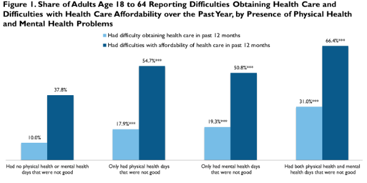

|  |
|
||||||||||||||||||||||||||||||||||||||||||||||||||||||||||||||||||||||||||||||||||||||||||||||||||||||||||||||||||||||||||||||||||||||||||||||||||||||||||||||||||||||||||||||||||||||
Health Care Access and Cost Barriers for Adults with Physical or Mental Health Issues: Evidence of Significant Gaps as the ACA Marketplaces Opened their Doors
Dana Goin and Sharon K. LongApril 4, 2014
Significant shares of working-age adults report physical and mental health issues (National Center for Health Statistics, 2013). Although 83.3 percent of nonelderly (age 18–64) adults in the US reported that their overall health status was good, very good, or excellent in 2012, more than one-third reported that their physical health (35.9 percent) or mental health (38.5 percent) was not good for one or more days in the past month.1 Physical and mental health problems translate into higher levels of health care need and higher risks for poor health outcomes if those needs are not met (Institute of Medicine, 2013). Historically, such health problems have been compounded by preexisting condition exclusions employed by health insurance companies to reduce costs. While the Affordable Care Act (ACA) has eliminated this practice, barriers to care for those with high health care needs are likely to remain. In this brief we examine the health care access and affordability challenges reported by nonelderly adults in December 2013—comparing the experiences of healthy adults to those of adults reporting physical and mental health problems in order to identify whether the latter are more likely to face barriers in getting the care they need.
What We Did
This brief uses data from the December 2013 Health Reform Monitoring Survey (HRMS), fielded just before coverage through the new Marketplaces and Medicaid expansion under the ACA began. Survey respondents were asked to report the number of days in the past month for which their physical and/or mental health was "not good." Based on these measures, we define four groups of adults: those not reporting any days in which either their physical or mental health was not good (44.7 percent), those reporting problems with their physical health only (18.5 percent), those reporting problems with their mental health only (11.8 percent), and those reporting problems with both their physical and their mental health (25.1 percent).2
We compare the extent of problems with health care access and affordability across these four groups based on the HRMS questions about problems accessing care,3 going without needed care because it was not affordable,4 high out-of-pocket health care spending by the respondent and his or her family, and problems paying medical bills over the past year. These comparisons provide insights into the association between health problems and health care access and affordability problems.
What We Found
Adults with health problems had difficulties obtaining and affording the health care they need, particularly those with both physical and mental health issues. Adults who reported at least one day in the past month in which their physical or mental health was not good were significantly more likely to report problems accessing and affording care (figure 1). For example, 54.7 percent of those reporting physical health problems and 50.8 percent of those reporting mental health problems reported difficulties affording health care, compared with 37.8 percent of adults with no health issues in the past month. Difficulties affording health care were even more prevalent for the adults with both mental and physical health problems (reported by 66.4 percent).
Adults with physical or mental health issues were significantly more likely to report problems obtaining or affording care regardless of income, although those with lower family income were especially likely to report difficulties. Nonelderly adults with family income at or below 138 percent of the federal poverty level (FPL) who reported both physical and mental health issues were 24.5 percentage points more likely than low-income adults without health problems to report challenges obtaining care in the past year (table 1). Similar gaps were observed among adults with family income between 138 and 399 percent of FPL (with those reporting both physical and mental health issues being 21.8 percentage points more likely to report problems obtaining care than their healthy counterparts). Adults with family income at or above 400 percent of FPL with physical and mental health issues were also more likely to cite difficulty obtaining care than their healthy counterparts, although the gap was smaller (13.0 percentage points).
Insurance coverage did not eliminate barriers to care for adults with physical and mental health issues, especially regarding affordability, leading to gaps in needed care. Having insurance coverage all year did not eliminate problems obtaining care or problems with the affordability of care for adults with health problems (figure 2). Among healthy nonelderly adults without insurance coverage for all of the past year, 9.5 percent reported difficulties obtaining care and 43.8 percent reported problems with affordability of care (figure 2). Uninsured adults with physical and mental health issues were significantly more likely to report problems obtaining (29.8 percent) and affording care (80.3 percent). Examining difficulties accessing care by health status within the insured population, however, reveals persistent gaps. Of insured adults with both physical and mental health issues, 29.9 percent reported access problems (versus 9.5 percent of adults with no health issues) and 59.9 percent reported affordability issues (versus 35.4 percent of adults with no health issues).
These barriers to obtaining care caused significant shares of insured adults to go without needed care because they were unable to afford it. Again, there were significant differences by health status (figure 3). The rate of affordability-related unmet need for medical care among insured adults with both physical and mental health issues was 26.6 percent, compared with 9.2 percent for those with no cited health issues. Similarly, unmet need for dental care (29.6 percent), prescription drugs (22.7 percent), and mental health care (14.4 percent) were significantly higher among those with physical and mental health issues when compared with rates of unmet need for dental care (13.1 percent), prescription drugs (7.5 percent), and mental health care (2.7 percent) among healthy insured adults.
What It Means
Just before implementation of the ACA’s coverage expansions and cost-sharing assistance policies, many health care consumers with physical or mental health issues found it difficult to obtain and afford care. Regardless of income and insurance status, those in poorer physical or mental health struggled more than their healthy counterparts to obtain the health care services they needed. Adults with health issues who had lower family income were especially vulnerable to problems with health care affordability.
Expanded Marketplace and Medicaid coverage provided by the ACA may help mitigate some affordability concerns among the previously uninsured, especially those with physical and mental health issues. However, insurance coverage alone will not ensure that adults with such health problems receive the care they need in a timely and affordable way. Subsidized cost-sharing for visits to health care professionals and for prescription drugs may relieve some of the burden. But in the absence of policies addressing the costs of care directly, affording needed health services is likely to remain difficult for many adults with physical and mental health problems, especially those with lower family income.
References
Institute of Medicine. 2013. U.S. Health in International Perspective: Shorter Lives, Poorer Health. Washington, DC: The National Academies Press.
National Center for Health Statistics. 2013. Health, United States, 2012: With Special Feature on Emergency Care. US Department of Health and Human Services, National Center for Health Statistics, Hyattsville, MD.
About the Series
This brief is part of a series drawing on the Health Reform Monitoring Survey (HRMS), a quarterly survey of the nonelderly population that is exploring the value of cutting-edge Internet-based survey methods to monitor the Affordable Care Act (ACA) before data from federal government surveys are available. The briefs provide information on health insurance coverage, access to and use of health care, health care affordability, and self-reported health status, as well as timely data on important implementation issues under the ACA. Funding for the core HRMS is provided by the Robert Wood Johnson Foundation, the Ford Foundation, and the Urban Institute.
For more information on the HRMS and for other briefs in this series, visit www.urban.org/hrms.
Note 1 Authors' tabulation on the 2012 Behavioral Risk Factor Surveillance System. 2 We also examined measures based on more days (e.g., 10 or more) in which health was "not good" and found the general patterns were similar, with more access and affordability problems reported by those with more days with health problems. 3 Problems obtaining care included difficulties finding a doctor or health care provider who would see you, being told by a doctor’s office or clinic they would not accept you as a new patient, being told by a doctor’s office or clinic that they do not accept your insurance type, or having trouble getting an appointment as soon as needed. 4 Respondents were asked whether they needed the following types of care but did not receive it because it was unaffordable: prescription drugs, medical care, general doctor care, specialist care, medical tests or follow-up care, dental care, and mental health care.
|
|||||||||||||||||||||||||||||||||||||||||||||||||||||||||||||||||||||||||||||||||||||||||||||||||||||||||||||||||||||||||||||||||||||||||||||||||||||||||||||||||||||||||||||||||||||||

 |
 |
 |